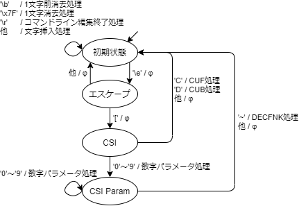
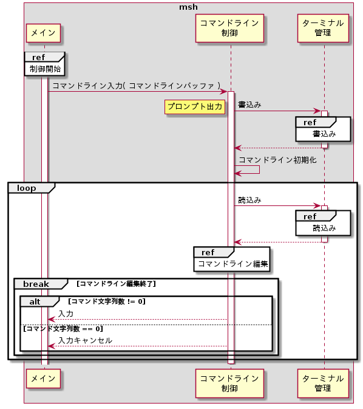

コマンドライン制御モジュール
コマンドライン制御モジュールは以下の機能を持つ。
初期化
コマンドライン編集における状態遷移を初期化する。シーケンスを以下に示す。
状態遷移初期化
コマンドライン編集にて使用する状態遷移を初期化する。初期化は、MLibライブラリのMLibStateInit()を用いて状態遷移の初期化を行う。設定パラメータを以下に示す。
| # | 引数名 | 設定値 | 備考 |
| 1 | *pHandle | (状態遷移ハンドルポインタ) | |
| 2 | *pTable | (状態遷移表ポインタ) | 状態遷移表は下記を参照 |
| 3 | tableSize | (状態遷移表サイズ) | sizeofを用いて求める |
| 4 | state | (初期状態) | |
| 5 | *pErr | (エラー要因格納先ポインタ) |

| ＼ | 状態 | 初期状態 | エスケープ | CSI |
| イベント | # | S1 | S2 | S3 |
| \b | E08 | 1文字前消去 →S1 |
- | - |
| \r | E0D | コマンドライン編集終了 →S1 |
- | - |
| \e | E1B | - →S2 |
- | - |
| C | E43 | - | - | CUF →S1 |
| D | E44 | - | - | CUB →S2 |
| [ | E5B | - | - →S3 |
- |
| \x7F | E7F | 1文字消去 →S1 |
- | - |
| 他 | E00 | Insert →S1 |
- →S1 |
- →S1 |
コマンド入力
コマンドライン入力を繰り返し行う。シーケンスを以下に示す。

プロンプト出力
ターミナル管理モジュールの機能を用いてターミナルファイルにプロンプトを出力する。詳細は、内部仕様(ターミナル管理モジュール)の書込み、および、外部仕様(コマンド入力機能)のプロンプト出力を参照のこと。
コマンドライン初期化
コマンドライン編集処理にて使用するコマンドラインバッファ、コマンドラインバッファのカーソル位置、コマンドラインバッファの末尾文字位置を初期化する。
読込み
ターミナル管理モジュールの機能を用いてターミナルファイルからデータ入力を待ち合わせる。詳細は、内部仕様(ターミナル管理モジュール)の読込み、および、外部仕様(コマンド入力機能)のターミナルファイル読込みを参照のこと。
コマンドライン編集
入力データをコマンドライン編集し、コマンドライン編集終了の場合はメインモジュールに結果（入力/入力キャンセルしたか、入力したコマンド）を返す。詳細は、コマンドライン編集を参照のこと。
コマンドライン編集
コマンドライン編集では、入力データを状態遷移によって制御する。シーケンスを以下に示す。
状態遷移実行
コマンド入力で読み込んだ1byteデータをイベント番号として、状態遷移を実行する。状態遷移はMLibライブラリのMLibStateExec()を用いる。設定パラメータを以下に示す。
| # | 引数名 | 設定値 |
| 1 | *pHandle | (状態遷移ハンドルポインタ) |
| 2 | event | (コマンド入力データ) |
| 3 | *pArg | (パラメータポインタ) |
| 4 | *pPrevState | (遷移前状態格納先ポインタ) |
| 5 | *pNextState | (遷移後状態格納先ポインタ) |
| 6 | *pErr | (エラー要因格納先ポインタ) |
状態遷移実行時のタスクのパラメータには下記を含む。
| # | 項目 |
| 1 | コマンド入力データ |
| 2 | コマンドライン編集終了可否 |
文字挿入
コマンドラインのカーソル位置に文字を挿入する。カーソル位置によって下記の通り処理を行う。
| バッファ カーソル位置 |
# | コマンドラインバッファ向け処理 | ターミナルファイル向け処理 |
| バッファ 末尾文字 +1 |
(1) | バッファのカーソル位置に入力文字を書込む。 | 入力文字を書込む。 |
| (2) | バッファのカーソル位置を1文字進める。 | ||
| 上記以外 | (1) | バッファのカーソル位置からバッファ末尾文字までの文字を1文字後ろにずらす(コピーする)。 | |
| (2) | ターミナルのカーソル位置に文字を挿入するために、"\e[@"を書込む（空白の挿入）。 | ||
| (3) | バッファのカーソル位置に文字を書込む。 | 入力文字を書込む。 | |
| (4) | バッファのカーソル位置を1文字進める。 |
1文字前消去
コマンドラインのカーソル位置の1つ前の文字を消去する。カーソル位置によって下記の通り処理を行う。
| バッファ カーソル位置 |
# | コマンドラインバッファ向け処理 | ターミナルファイル向け処理 |
| バッファ 先頭 |
(1) | 処理無し | |
| バッファ 末尾文字 +1 |
(1) | バッファのカーソル位置を1文字戻す。 | ターミナルのカーソル位置を1文字戻すために、"\e[D"を書込む。 |
| (2) | バッファのカーソル位置を1文字削除する。 | ターミナルのカーソル位置を1文字削除するために、"\e[X"を書込む。 | |
| 上記以外 | (1) | バッファのカーソル位置を1文字戻す。 | ターミナルのカーソル位置を1文字戻すために、"\e[D"を書込む。 |
| (2) | バッファのカーソル位置+1からバッファ末尾文字までの文字を1文字前にずらす(コピーする)。 | ターミナルのカーソル位置の文字を消去するために、"\e[P"を書込む。 | |
1文字消去
コマンドラインのカーソル位置の文字を消去する。カーソル位置によって下記の通り処理を行う。
| バッファ カーソル位置 |
# | コマンドラインバッファ向け処理 | ターミナルファイル向け処理 |
| バッファ 末尾文字 +1 |
(1) | 処理無し | |
| 上記以外 | (1) | バッファのカーソル位置+1からバッファの末尾文字までの文字を1文字前にずらす(コピーする)。 | ターミナルのカーソル位置の文字を消去するために、"\e[P"を書込む。 |
CUF
コマンドラインのカーソル位置を1文字進める。カーソル位置によって下記の通り処理を行う。
| バッファ カーソル位置 |
# | コマンドラインバッファ向け処理 | ターミナルファイル向け処理 |
| バッファ 末尾文字 +1 |
(1) | 処理無し | |
| 上記以外 | (1) | バッファのカーソル位置を1文字進める。 | ターミナルのカーソル位置を1文字進めるために、"\e[C"を書き込む。 |
CUB
コマンドラインのカーソル位置を1文字戻す。カーソル位置によって下記の通り処理を行う。
| バッファ カーソル位置 |
# | コマンドラインバッファ向け処理 | ターミナルファイル向け処理 |
| バッファ先頭 | (1) | 処理無し | |
| 上記以外 | (1) | バッファのカーソル位置を1文字戻す。 | ターミナルのカーソル位置を1文字戻すために、"\e[D"を書き込む。 |
コマンドライン編集終了
ターミナルファイルに"\r\n"を書込み、コマンド入力に編集したコマンドを返す。